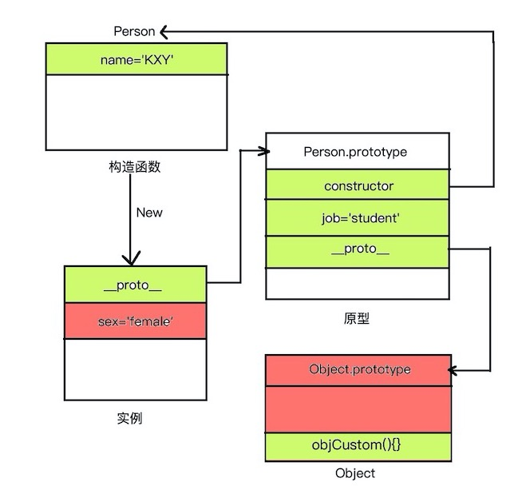
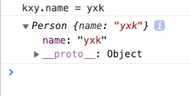

首先要分清什么是可枚举属性，什么是不可枚举属性
在JavaScript中，对象的属性分为可枚举和不可枚举之分，它们是由属性的enumerable值决定的。可枚举性决定了这个属性能否被for…in查找遍历到。
js中基本包装类型的原型属性是不可枚举的,如Object, Array, Number等，如果你写出这样的代码遍历其中的属性：
var num = new Number();
for(var pro in num) {
console.log("num." + pro + " = " + num[pro]);
}它的输出结果会是空。这是因为Number中内置的属性是不可枚举的，所以不能被for…in访问到。
Object对象的propertyIsEnumerable()方法可以判断此对象是否包含某个属性，并且这个属性是否可枚举。
需要注意的是：如果判断的属性存在于Object对象的原型内，不管它是否可枚举都会返回false。
举个例子：
Object.prototype.objCustom = function () { };
function Person() {
this.name = "KXY";
}
Person.prototype = {
constructor: Person,
job: "student",
};
var kxy = new Person();
Object.defineProperty(kxy, "sex", {
value: "female",
enumerable: false
});则用for in 来遍历的话
for(var pro in kxy) {
console.log("kxy." + pro + " = " + kxy[pro]);
}
// kxy.name = KXY
// kxy.constructor = function Person() {
// this.name = "KXY";
// }
// kxy.job = student
// kxy.objCustom = function () { }在这个kxy实例对象之中，我们可以发现我们可以遍历出四个可枚举属性，这个单纯看的话，很难理解为什么会有这四个属性，于是我画了张图，给大家解释下，红色部分表示不可枚举属性，绿色表示可枚举属性。这张图呢如果一看一脸懵逼，大家可以去参考《JavaScript高级程序设计》这本书的原型讲解的那一部分，我之前也发过随笔单独做了原型那一部分的笔记，也可以去翻一翻。

其中sex不可以枚举是因为设置了enumberle这个属性，而object是因为他是JS基本包装类，所以他的任何属性都不可以被枚举。
我们for-in的事这个实例，他有proto和sex这两个属性，sex不行，所以顺着__proto__是往下翻，可以接收到他的原型的constructor， job， __proto__其中job可以直接枚举，然后剩下两个constructor和__proto__可以接着往下找，constructor是连接着构造函数，构造函数里有一个name所以将他输出，然后这一条路结束了。然后看原型的__proto__就是Object，因为他是JS的基本包装类，所以他里面的任何自带属性都不能被枚举,而我们自定义的objCustom方法是可以被枚举的，他不是自带的属性。所以综上所述，最后迭代出四个属性。所以for-in的大致过程就是这样。
这两个方法也可以帮助我们判断属性是否可以枚举。
首先 Object.keys() 这个方法是专门用来返回一个对象的所有可枚举属性的字符串的。所以用它可以达到和for-in近似的效果。唯一不同的就是不能取到所有属性的值。
而JSON.stringify()这个只能stringify可枚举属性的值，如果不可枚举的是不会显示的。
上面讲了那么多，感觉for-in讲的已经差不多了，for-in的主要作用就是迭代一个对象里的可枚举属性。
用法是：
for (variable in object) {...}variable
在每次迭代时，将不同的属性名分配给变量。
object
被迭代枚举其属性的对象。
实例：
<script>
function Person() {
this.name = "KXY";
}
var kxy = new Person();
for (var pro in kxy) {
kxy[pro] = 'yxk'
console.log("kxy." + pro + " = " + kxy[pro]);
}
console.log(kxy);
</script>结果：

值得一提的是，for-in 和for-of在迭代的过程中如果修改了属性的值，会直接作用在对象上。但是不推荐这么做因为这里并不保证是否一个被添加的属性在迭代过程中会被访问到，不保证一个修改后的属性（除非是正在被访问的）会在修改前或者修改后被访问，不保证一个被删除的属性将会在它被删除之前被访问。
另外for-in不推荐去迭代一个数组，因为数组索引只是具有整数名称的枚举属性，并且与通用对象属性相同。不能保证for ... in将以任何特定的顺序返回索引。
asOwnProperty() 方法会返回一个布尔值，指示对象自身属性中是否具有指定的属性（也就是是否有指定的键）
最开始的枚举属性的例子for-in不仅会将实例的属性迭代，而且会将原型上的属性一并迭代，如果只想迭代自身属性的话，那么就要配合上hasOwnProperty()这个属性了。
实例：
Object.prototype.objCustom = function() {};
Array.prototype.arrCustom = function() {};
let iterable = [3, 5, 7];
iterable.foo = 'hello';
for (let i in iterable) {
if (iterable.hasOwnProperty(i)) {
console.log(i);
}
}
// 结果：
// logs 0, 1, 2, "foo"
for (let i in iterable) {
console.log(i);
}
// 结果：
// logs 0, 1, 2, "foo", "arrCustom", "objCustom"for...of语句在可迭代对象上（包括Array,Map,Set,String,TyedArray,arguments对象等等）上创建一个迭代循环，调用自定义迭代钩子，并为每个不同属性的值执行语句
用法
for (variable of iterable) {
//statements
}variable在每次迭代中，将不同属性的值分配给变量。
iterable被迭代枚举其属性的对象。
for-of同样可以直接修改迭代对象的值，而且不像for-in会去迭代可枚举属性的值。
For-of除了遍历最基本的数组，还经常用在迭代字符串上。
具体更多的方法就参考文档吧，for-of感觉并没有什么难点。
https://developer.mozilla.org/zh-CN/docs/Web/JavaScript/Reference/Statements/for...of
更多的遍历数组可以看我上一篇随笔：https://www.cnblogs.com/wangzirui98/p/11226781.html
就写这么多吧，只是很简单的总结，如果有什么问题请大家指正。